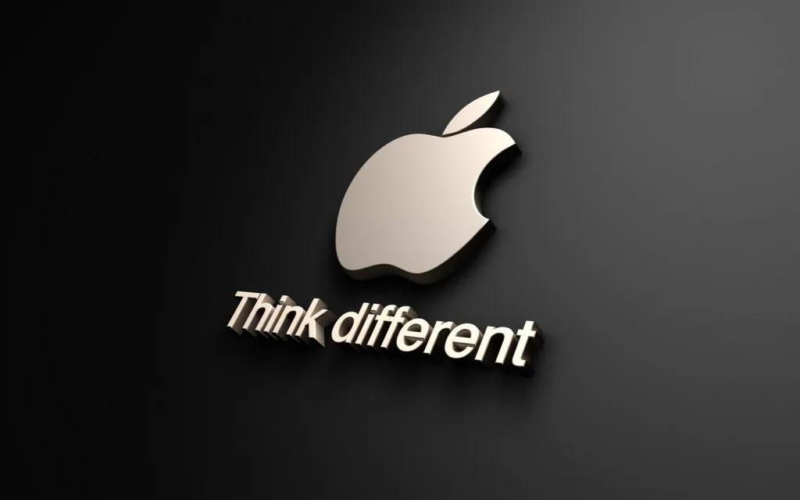

Surge un nuevo rumor de que la empresa esté desarrollando su propio navegador, que tardaría cuatro años aún.
En 2018 surgió la posibilidad de que Apple tuviera un buscador propio, pero recientemente volvieron a aparecer los rumores, ya que la empresa quiere incrementar su negocio publicitario. Según fuentes de Apple, la compañía esta trabajando en esta herramienta para agregar funciones de búsqueda de Spotlight y Sugerencias de Siri en iPhone y Mac, lo que ayudaría a mejorar las respuestas del asistente de voz.
Dicho proyecto se equilibraría con el aumento de anuncios en la tienda App Store ya que la publicidad es el principal punto de monetización de un sitio como el que tiene Google, Bing, Yahoo o DuckDuckGo.
El inicio de estos rumores fue hace cuatro años cuando la empresa compró una startup de noticias llamadas Laserlike, que fue fundada por un grupo de ingenieros de Google. El cofundador, Srinivasan Venkatachary, tomó el mando como director del equipo de búsquedas de Apple y tenía al menos 200 empleados a cargo, quienes desarrollaban las funciones para Spotlight y las Sugerencias de Siri. Con el crecimiento de esta sección, algunos de los trabajadores que se fueron uniendo provenían de Google Search, lo que aumentó los rumores de un posible buscador de los creadores del iPhone. Durante todo este tiempo también ha surgido el rumor de una posible compra, por parte de Apple, de DuckDuckGo por 15 mil millones de dólares. Este buscador es el séptimo más usado en el mundo, pero tiene una fuerte política de privacidad que se alinearía con la de la empresa de Cupertino.

Sin embargo, dentro del panorama de la creación de un buscador, Apple tendría un acuerdo para que el buscador de Google esté como predeterminado en Safari, su navegador, por lo que ponen un signo de interrogación sobre la pertinencia de un proyecto de este tipo, debido a que la alianza supondría el 3 o 4 % de los ingresos totales de la compañía creada por Steve Jobs al recibir entre 10.000 y 15.000 millones de dólares. Entonces, fuentes de Apple y medios de comunicación creerían que el desarrollo de un buscador propio para la empresa podría tardar “al menos cuatro años” más, al no tener un alto nivel de progreso en este momento.
En el medio The Information dice que se puede “impulsar la búsqueda en Apple Music y App Store” y ayudaría a “generar datos para los equipos de Apple que desarrollen aplicaciones que utilicen el procesamiento del lenguaje natural, como las de traducción”. De concretarse este plan, la empresa entraría en un terreno que es ampliamente dominado por Google desde hace mucho tiempo, al ser el buscador más usado en todo el mundo con una cuota del 92.07 %. Para el resto de plataformas queda un espacio pequeño donde Bing, la herramienta de Microsoft, ocupa el segundo lugar con 2.44 %, seguido de Yahoo! con 1.62 % y Baidu con 1.49 %. Números que en Sudamérica son muy parecidos. Google tiene el 96.31 % de los usuarios, luego está Bing con el 2.46 % y Yahoo! con el 0.89 %.
¡Suscríbete!
Te enviaremos una notificación cada vez que hagamos una entrada nuevo en el blog , para que siempre estés al día.